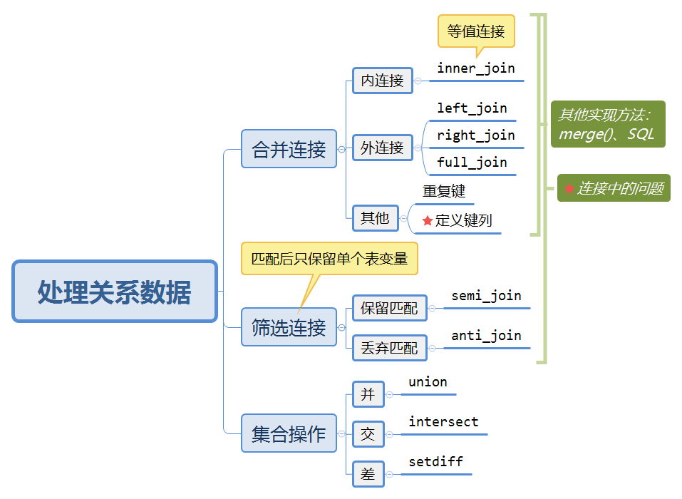

10 Relational data
学习利用dplyr中的函数处理关系数据，其实也就是实现SQL里边的一些内容。
10.1 键
类似于数据库的定义，不再赘述。
关于如何验证表的主键，一种验证方法是对主键进行count()操作，然后查看是否有n大于1的记录，即看看是否违背唯一确定的性质：
planes %>%
count(tailnum) %>%
filter(n>1)
#> # A tibble: 0 x 2
#> # ... with 2 variables: tailnum <chr>, n <int>关于如何建立代理键，可以利用mutate与row_number():
10.2 处理关系数据的三种操作

10.2.1 定义键列
通过上述函数的参数by来设置。
默认值
by = NULL，自然连接。字符向量
by = "x"。这种方式与自然连接很相似，但只使用指定的公共变量。命名字符向量
by = c("a" = "b")。这种方式会匹配x表中的a变量和y表中的b变量。输出结果中使用的是x表中的变量。适用于含义一样但名字不同的变量之间连接。
10.2.2 连接中的问题
首先，需要找出每个表中可以作为主键的变量。一般应该基于对数据的理解来确定主键，而不是凭经验寻找能作为唯一标识符的变量组合。从含义出发！
确保主键中的每个变量都没有缺失值。（实体完整性…）
检查外键是否与另一张表的主键相匹配。最好的方法是使用
anti_join()，由于数据录入错误，外键和主键不匹配的情况很常见。解决这种问题通常需要大量工作。
10.3 练习
（1）将起点机场和终点机场的位置信息（即lat和lon）添加到flights中。
先去掉airports中多余的变量，再两次左外连接：
airport_locations <- airports %>%
select(faa, lat, lon)
flights %>%
select(year:day, hour, origin, dest) %>%
left_join(
airport_locations,
by = c("origin" = "faa")
) %>%
left_join(
airport_locations,
by = c("dest" = "faa")
)
#> # A tibble: 336,776 x 10
#> year month day hour origin dest lat.x lon.x lat.y lon.y
#> <int> <int> <int> <dbl> <chr> <chr> <dbl> <dbl> <dbl> <dbl>
#> 1 2013 1 1 5 EWR IAH 40.7 -74.2 30.0 -95.3
#> 2 2013 1 1 5 LGA IAH 40.8 -73.9 30.0 -95.3
#> 3 2013 1 1 5 JFK MIA 40.6 -73.8 25.8 -80.3
#> 4 2013 1 1 5 JFK BQN 40.6 -73.8 NA NA
#> 5 2013 1 1 6 LGA ATL 40.8 -73.9 33.6 -84.4
#> 6 2013 1 1 5 EWR ORD 40.7 -74.2 42.0 -87.9
#> # ... with 336,770 more rows为什么是左外连接而不是内连接？先看看内连接：
flights %>%
select(year:day, hour, origin, dest) %>%
inner_join(
airport_locations,
by = c("origin" = "faa")
) %>%
inner_join(
airport_locations,
by = c("dest" = "faa")
)
#> # A tibble: 329,174 x 10
#> year month day hour origin dest lat.x lon.x lat.y lon.y
#> <int> <int> <int> <dbl> <chr> <chr> <dbl> <dbl> <dbl> <dbl>
#> 1 2013 1 1 5 EWR IAH 40.7 -74.2 30.0 -95.3
#> 2 2013 1 1 5 LGA IAH 40.8 -73.9 30.0 -95.3
#> 3 2013 1 1 5 JFK MIA 40.6 -73.8 25.8 -80.3
#> 4 2013 1 1 6 LGA ATL 40.8 -73.9 33.6 -84.4
#> 5 2013 1 1 5 EWR ORD 40.7 -74.2 42.0 -87.9
#> 6 2013 1 1 6 EWR FLL 40.7 -74.2 26.1 -80.2
#> # ... with 329,168 more rows行数要少很多，说明有很多是没有匹配到的。
另一个问题，对于重复的变量lat,lot，连接时会默认添加.x,.y用于区分，可以使用参数suffix来修改。如：
flights %>%
select(year:day, hour, origin, dest) %>%
left_join(
airport_locations,
by = c("origin" = "faa")
) %>%
left_join(
airport_locations,
by = c("dest" = "faa"),
suffix = c("_origin", "_dest")
)
#> # A tibble: 336,776 x 10
#> year month day hour origin dest lat_origin lon_origin lat_dest lon_dest
#> <int> <int> <int> <dbl> <chr> <chr> <dbl> <dbl> <dbl> <dbl>
#> 1 2013 1 1 5 EWR IAH 40.7 -74.2 30.0 -95.3
#> 2 2013 1 1 5 LGA IAH 40.8 -73.9 30.0 -95.3
#> 3 2013 1 1 5 JFK MIA 40.6 -73.8 25.8 -80.3
#> 4 2013 1 1 5 JFK BQN 40.6 -73.8 NA NA
#> 5 2013 1 1 6 LGA ATL 40.8 -73.9 33.6 -84.4
#> 6 2013 1 1 5 EWR ORD 40.7 -74.2 42.0 -87.9
#> # ... with 336,770 more rows